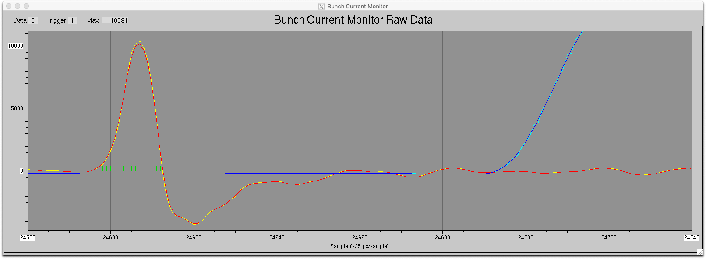

Bunch Current Monitor Timing Adjustment
Introduction
The bunch current monitor obtains its acquisition clock and timing
reference marker from the facility timing system. The monitor
includes a parameter to adjust for the timing delays between the
reference marker and the arrival of the signal from the first bunch in
the storage ring. This document presents a procedure to set the
value of this parameter.
Until the final timing system changes are in place this procedure will
have to be performed each time the timing crate is powered down and back
up. Once the new timing system is in place the procedure will
need to be performed only when some hardware in the timing or RF system has changed.
The trigger delay value is autosaved and will be restored whenever the bunch current monitor is restarted.
Preparation
Ensure that there is some current in a known storage ring
bucket. Typically this is the cam bucket, but any bucket will
do. In the examples shown below the maximum charge is known
to be bucket number 308.
Script
The easiest way to set the trigger delay is to first load the storage
ring with the cam bucket (308) containing more charge than any other
bucket and then run the script described below.
- Change to the directory containing the script:
cd /vxboot/siocbcm/boot/scripts
- Run the script:
./setTriggerDelay.py -u
The script accepts a number of optional arguments. With no
arguments the script simply prints the optimum trigger delay
value. The ‘-u’ argument causes the script to actually write the
value into the trigger delay record. A full list of the arguments
is shown when the script is run with a ‘-h’ argument:
./setTriggerDelay.py -h
usage: setTriggerDelay.py [-h] [-c CAM] [-p PREFIX] [-u] [-v]
Set bunch current monitor trigger delay.
optional arguments:
-h, --help show this help message and exit
-c CAM, --cam CAM Cam bucket number (must be bucket with highest
charge!) (default: 308)
-p PREFIX, --prefix PREFIX
PV name prefix (default: SR1:BCM:)
-u, --update Update with derived value (default: False)
-v, --verbose Show operations as they take place (default: False
Manual Procedure
If for some reason the script can not be used or does not work the following manual procedure can be performed.
- Open the bunch current monitor ‘Raw Data’ screen (from the ‘More...’ button of the main screen).
- Zoom in on the signal from the bucket selected during the preparation stage.

- Check if the signal peak is showing up in the correct sample.
The relationship between peak location and bucket number is
Peak Location (samples) = (Bucket Number × 80) − 20
so for bucket 308 the peak should be at sample (308 × 80) − 20 = 24620
However the above display shows that the peak is actually at sample
number 24607. This indicates the the ‘Trigger Delay’ parameter on
the engineering screen is 13 counts (24620−24607) too small.
- If the peak of the signal from the bucket in question is in the
wrong location bring up the ‘Engineering’ screen and apply the required
change to the ‘Trigger Delay’ parameter.